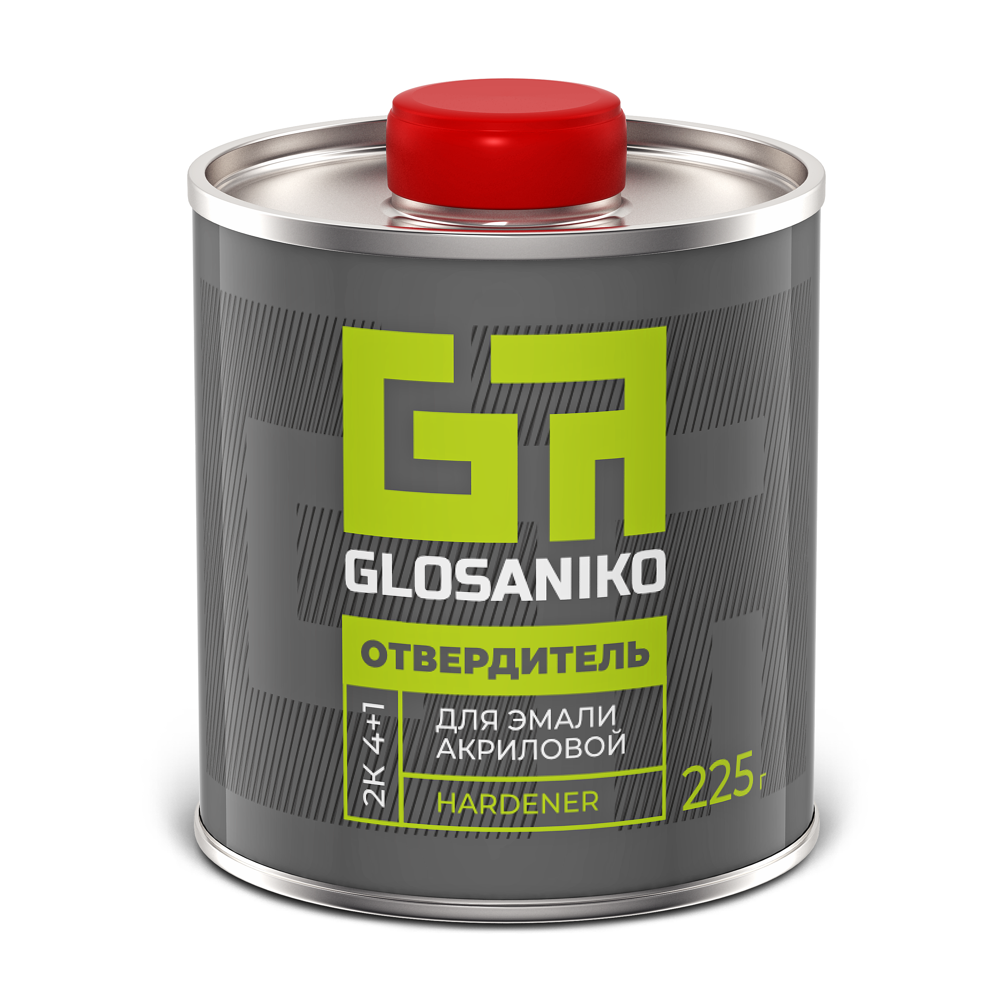
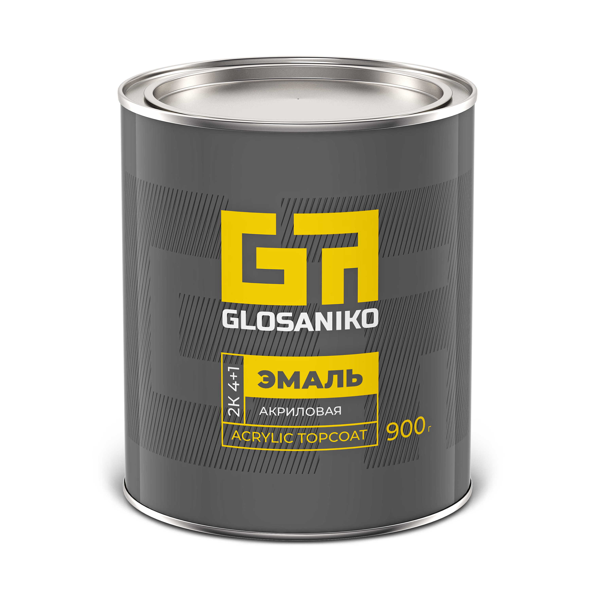

Акриловая эмаль
Glosaniko
Двухкомпонентная акриловая эмаль для самостоятельной и профессиональной окраски
900 г
Используется вместе с отвердителем и разбавителем системы Glosaniko
О продукте
Glosaniko — двухкомпонентная акриловая эмаль для самостоятельной и профессиональной окраски. Эмаль используется с отвердителем и разбавителем системы Glosaniko
Материал подбирают с учётом поверхности и условий работы. Требования к подготовке, нанесению и сушке определяются технической документацией к продукту
Характеристики
Основные сведения о продукте
- Тип материала
- Двухкомпонентная акриловая эмаль
- Фасовка
- 900 г
- Бренд
- Glosaniko
- Производитель
- ООО «ПРОКРАСИМ»
РасходДанные ожидаются
Количество слоёвДанные ожидаются
Время и условия сушкиДанные ожидаются
Пропорции смешиванияБудут уточнены по TDS
Применение
Подготовка, смешивание, нанесение и сушка — по технической документации к продукту
Заявленные характеристики достигаются при использовании рекомендованных компонентов Glosaniko
Подробная инструкция ↗Подготовка поверхности
Требования к подготовке будут добавлены после сверки технических материалов
Смешивание и нанесение
Пропорции, условия и рекомендации по нанесению будут уточнены по TDS
Выдержка и сушка
Точные температуры и времена будут добавлены из технической документации
Компоненты системы
Отвердитель и разбавитель для совместного использования с эмалью
Техническая документация
Точные параметры и рекомендации по применению — в техническом документе продукта
TDS / PDF
Файл для этой эмали будет добавлен после сверки технической документации
Где купить
Выберите маркетплейс или найдите дилера в своём регионе
WildberriesСсылка на товар будет добавлена
OzonСсылка на товар будет добавлена
Яндекс МаркетСсылка на товар будет добавлена